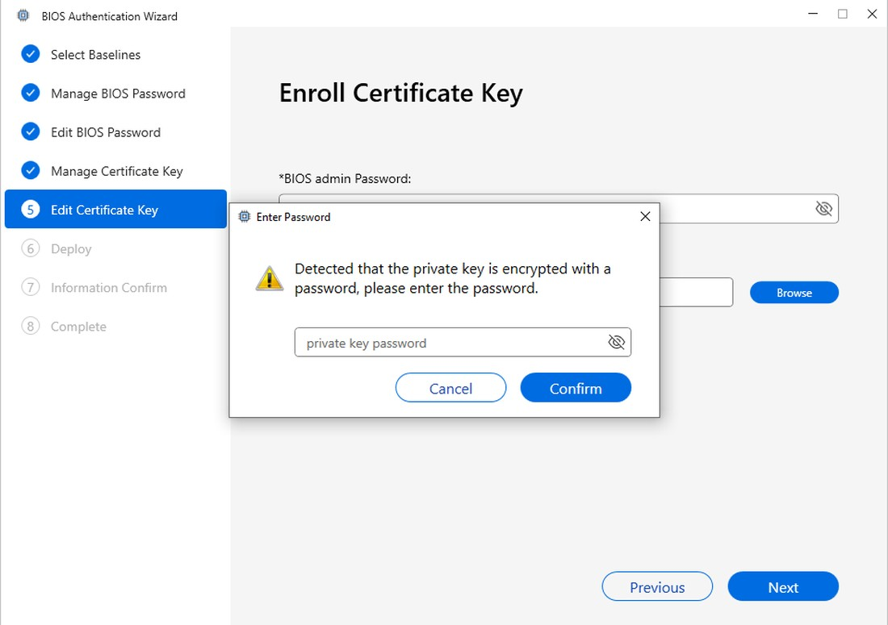
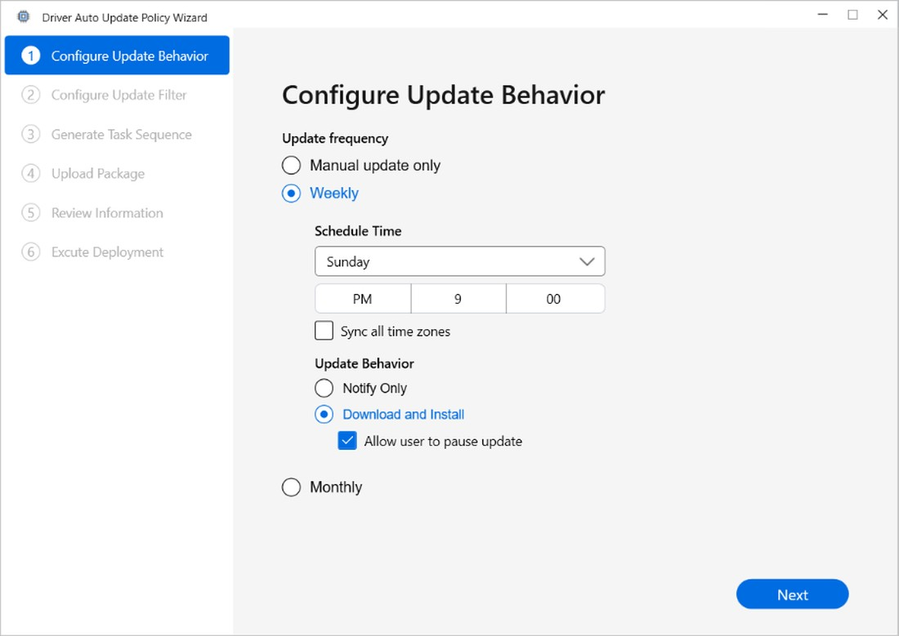

A console that controls thousands of machines at once
一個一次掌控數千台機器的主控台
ASUS Config Manager extends Microsoft SCCM (System Center Configuration Manager — the tool IT teams use to manage thousands of machines at once), adding BIOS configuration, encrypted BIOS deployment, faster updates, and remote management via Intune / DFCI (Device Firmware Configuration Interface — the channel for changing firmware settings remotely). Its users are corporate IT admins, not developers, and a single action can reconfigure firmware, rotate credentials, or push a BIOS update across an entire device fleet. A wrong-looking screen here isn’t cosmetic — it’s downtime on real machines, or a fleet locked out of its own firmware.
ASUS Config Manager 擴充了 Microsoft SCCM（System Center Configuration Manager——IT 團隊用來一次管理數千台機器的工具），加入 BIOS 設定、加密 BIOS 派送、加速更新，並透過 Intune／DFCI（Device Firmware Configuration Interface——遠端變更韌體設定的管道）進行遠端管理。它的使用者是企業 IT 管理者，不是開發者；一個動作就可能重設韌體、輪替憑證，或把一次 BIOS 更新推送到整批裝置。這裡只要畫面讓人會錯意，就不是表面問題——而是真實機器的停機，或整批機隊被鎖在自己的韌體外。
I took over a queue of the highest-stakes features
我接手了一連串風險最高的功能
Fig. 1 — The console I worked inside, mapped. Of the BIOS and Driver modules, my security-UX redesign concentrated on the two highest-stakes flows — BIOS Authentication and Driver Updater Policy — where an invisible cryptographic or deployment state could silently do the wrong thing.
圖 1 — 我所在的主控台模組地圖。在 BIOS 與 Driver 這些模組裡，我的資安 UX 改版集中在風險最高的兩條流程——BIOS Authentication 與 Driver Updater Policy——也就是「看不見的密碼學或部署狀態」最可能默默做錯事的地方。
Cryptographic state is invisible until it bites
密碼學的狀態是看不見的——直到出事那一刻才現形
The hard part of this tool isn’t any single screen — it’s that the riskiest state is hidden. A certificate key might itself be encrypted; a BIOS password might not match; a deploy might force a reboot on a machine someone is mid-task on. Each of these is a security or trust state the admin can’t see until something fails. My job was to surface those states, gate progression on them, and make the unsafe path structurally hard to take — without dumbing the tool down for the experts who depend on its depth.
這個工具真正難的地方，不在任何一個畫面，而在於：最危險的狀態是看不見的。憑證金鑰本身可能被加密；BIOS 密碼可能對不上；一次部署，可能在某人工作到一半時強制重開他的機器。這些都是管理者在出錯之前看不見的資安／信任狀態。我的工作，就是把這些狀態攤到檯面上、用它們擋住流程，並讓不安全的操作在結構上根本走不到——同時又不為了簡化，犧牲掉那些需要這套工具深度的專家。
Three decisions, one principle: never fail silently
三個決策，一個原則：絕不默默失敗

Fig. 2 — The encrypted-key step, from ASUS’s public user guide. The wizard detects the encrypted private key, holds progression, and asks for the password in plain language — the state, not the user, decides when the step can advance.
圖 2 — 加密金鑰步驟，取自 ASUS 公開使用手冊。精靈偵測到被加密的私鑰、擋下流程，並用白話向使用者要密碼——決定步驟能否前進的是「狀態」，不是使用者的硬闖。
A password-encrypted key shouldn’t become a dead end
被密碼加密的金鑰，不該變成死路
A certificate key used in BIOS credential operations can itself be encrypted with a password. The naive behaviour is a cryptic failure the admin only meets after committing.
BIOS 憑證操作所用的金鑰，本身可能被密碼加密。最直覺（但最糟）的行為，是讓管理者在已經送出之後，才撞上一個看不懂的錯誤。
So I did →於是我 →Detected the encrypted state and gated progression — the next action stays disabled and the flow explains the state in plain language, asking for the key password with the reason rather than an error code. A wrong password returns a clear re-enter path; a correct one unlocks the step. Security state becomes legible and recoverable, never a wall.
先偵測到金鑰被加密，就把流程擋下來——下一步維持停用，並用白話說明現在的狀態、告訴使用者原因，再請他輸入金鑰密碼，而不是丟一串錯誤碼給他。密碼打錯，就給一條清楚的重新輸入路徑；打對了，就解鎖這一步。資安狀態因此變得看得懂、也救得回來，不再是一道死牆。

Fig. 3 — The driver auto-update policy, from ASUS’s public user guide. The cautious option is the default: notify or install on a set schedule, with the user always able to pause.
圖 3 — 驅動程式自動更新政策，取自 ASUS 公開使用手冊。預設就是最保守的選項：依排程通知或安裝，而且使用者隨時可以暫停。
An always-on update policy must never ambush the person at the keyboard
一個一直開著的更新政策，絕不能突襲正在用機器的人
A driver auto-update policy runs unattended across the whole fleet on a schedule. Left on a naive default, it could download, install, and reboot on its own cadence — including on someone in the middle of their work.
驅動程式自動更新政策會依排程、在整批機器上無人值守地執行。如果預設值設得太隨便，它就可能照自己的節奏下載、安裝、重開機——包括在某個人工作到一半的時候。
So I did →於是我 →Made the cautious option the default. The policy notifies or installs only on an explicit schedule, and even when set to install it keeps “allow user to pause” on — so an update can be deferred, never forced. Frequency, severity, and driver category are all scoped up front, so the policy can only ever do what the admin deliberately switched on.
把最保守的選項設成預設。政策只在明確的排程下通知或安裝，而且就算設成自動安裝，也預設保留「允許使用者暫停」——更新可以延後，而不是被硬塞。更新頻率、嚴重度、驅動類別都得事先界定清楚，所以這套政策永遠只能做管理者刻意打開的那些事。
Fig. 4 — Consolidated result report (design concept). The raw exit code becomes a reason an admin can act on; the whole fleet is one view, not a per-device hunt.
圖 4 — 整合結果報表（設計概念）。原始 exit code 變成管理者能據以行動的原因；整批機隊在同一個視圖，而不是逐台追查。
A failed deploy shouldn’t mean reading exit codes by hand
部署失敗，不該還要人工去讀 exit code
To learn why a fleet deployment failed, an admin had to drill through the SCCM monitor one device at a time, read a raw exit code, then cross-reference it against a table to find out what actually broke — and the in-progress state looked identical to a real failure.
想知道機隊部署「為什麼」失敗，管理者得在 SCCM 監控裡逐台下鑽、讀出一個原始 exit code，再回去對照表格才知道真正壞在哪——而且「還在派送中」看起來和「真的失敗」長得一模一樣。
So I did →於是我 →Designed one consolidated result report. I benchmarked a competitor’s compliance report, then rebuilt the model around ASUS’s BIOS-config flow: every device’s outcome in a single view, each raw exit code rewritten as a plain-language, item-level result, a distinct in-progress state so “not done yet” is never read as failure, and one-click CSV export of just the failures. Diagnosis goes from a per-device hunt to a glance.
做了一份整合的結果報表。我先研究了競品的 compliance report，再重新設計成貼合 ASUS BIOS 設定流程的版本：所有裝置的結果集中在同一個畫面，每個原始 exit code 都改寫成逐項、白話的結果，並把派送中獨立成一個狀態，讓「還沒跑完」不會被誤認成「失敗」，再加上一鍵只匯出失敗項目的 CSV。診斷從一台一台追查，變成一眼就看完。
On sources: the screenshots in Figures 2 and 3 are taken from ASUS’s publicly published Config Manager user guide, which documents the shipping product. Figure 4 is a design-concept diagram of the consolidated result report — the public guide documents the underlying exit codes and per-device status, but not a single consolidated screen, so it is shown as a concept. No internal, unreleased, or customer-identifying material appears on this page.
關於來源：圖 2 與圖 3 的截圖取自 ASUS 已公開發佈的 Config Manager 使用手冊，內容對應已出貨的產品。圖 4 是「整合結果報表」的設計概念圖——公開手冊記錄了底層的 exit code 與逐台狀態，但沒有單一的整合畫面，因此以概念圖呈現。本頁不含任何內部、未發佈或可識別客戶的資料。
What I traded off — and why
我取捨了什麼——以及為什麼
-
01
Gated progression on valid state, not on trust
用「有效狀態」卡流程，而不是靠信任
Trade-off: a few extra seconds vs. shipping a broken or insecure action across a fleet. I chose to disable the next step until an encrypted key is unlocked and a password validates. At fleet scale, a blocked step is cheap; a bad deployment is not.
取捨：多等幾秒，還是把一個壞掉或不安全的動作推送到整批機器。我選擇在金鑰解鎖、密碼驗證通過之前，先停用下一步。在整批機器的規模下，多卡幾秒很便宜；推錯一次部署，代價就很大。
-
02
Explained the security state instead of hiding it
把資安狀態說清楚，而不是藏起來
Trade-off: a denser prompt vs. an admin stuck at a cryptic wall. I surfaced why a step is blocked — encrypted key, wrong password — in language a non-developer can act on, rather than a silent failure or an error code.
取捨：提示多一點，還是讓管理者卡在一道看不懂的牆前面。我選擇把「這一步為什麼被擋」——金鑰被加密、密碼錯了——用非技術人員也能照著做的白話講清楚，而不是默默失敗、或丟一串錯誤碼。
-
03
Let structure prevent invalid states
讓結構本身防止無效狀態
Trade-off: less raw flexibility vs. fewer fleet-scale mistakes. Interlocked controls and stepped disclosure remove whole classes of error before they happen — I’d rather make the wrong action unreachable than warn about it.
取捨：少一點自由度，換來整批機器少出一些錯。用連動的控制項和一步步揭露的設計，在錯誤發生之前就把一整類問題消掉——我寧可讓錯的操作根本做不出來，也不要等它做了才警告。
Faster because it’s harder to get wrong
更快，正因為更難出錯
The encrypted-credential, safe-deploy and reporting flows shipped inside ASUS Config Manager — which extends Microsoft SCCM with BIOS configuration and Intune / DFCI remote management, and is positioned by ASUS as roughly 2× faster for BIOS & driver management than standard SCCM. The win I can speak to most directly is legibility: fleet-wide diagnosis that used to be a per-device hunt through raw exit codes now reads at a glance.
加密憑證、安全部署與結果報表這幾條流程，隨 ASUS Config Manager 出貨——該產品以 BIOS 設定與 Intune / DFCI 遠端管理擴充 Microsoft SCCM，並由華碩定位為 BIOS 與驅動管理約較標準 SCCM 快 2 倍。我最能直接講的成果是「看得懂」：過去要逐台追查原始 exit code 的機隊診斷，現在一眼看完。
Note — figures describe design scope I own (states surfaced, codes rewritten), not internal business metrics. Adoption, ticket-volume or device-count numbers are deliberately left out unless verified.
註——上述數字描述的是我負責的設計範圍（呈現的狀態數、改寫的錯誤碼），不是內部商業指標。採用數、工單量或裝置數在未經查證前刻意不列。
Security UX is making the unsafe path hard to take
資安 UX，是讓不安全的路難以走到
Security UX isn’t decoration on top of cryptography. It is making cryptographic and policy state legible, and making the unsafe action structurally hard — ideally impossible — to reach. On a fleet tool the highest-leverage move is to prevent an invalid or insecure action before it ships, then explain every blocked state in language a non-developer admin can act on. That same conviction — that complex, high-stakes systems deserve interfaces that reduce fear rather than add to it — is what I want to bring to security products at scale.
資安 UX 不是在密碼學外面貼一層裝飾。它是把密碼學和政策的狀態變得看得懂，並讓不安全的動作在結構上很難——最好是根本不可能——做得出來。在這種管理整批機器的工具上，最有效的做法，是在錯誤的動作送出去之前就先擋住它，再把每一個被擋下來的狀態，用非技術人員也能照著行動的話講清楚。複雜、高風險的系統，本來就該配上一個能降低恐懼、而不是製造恐懼的介面——這個信念，正是我想帶進大型資安產品的東西。